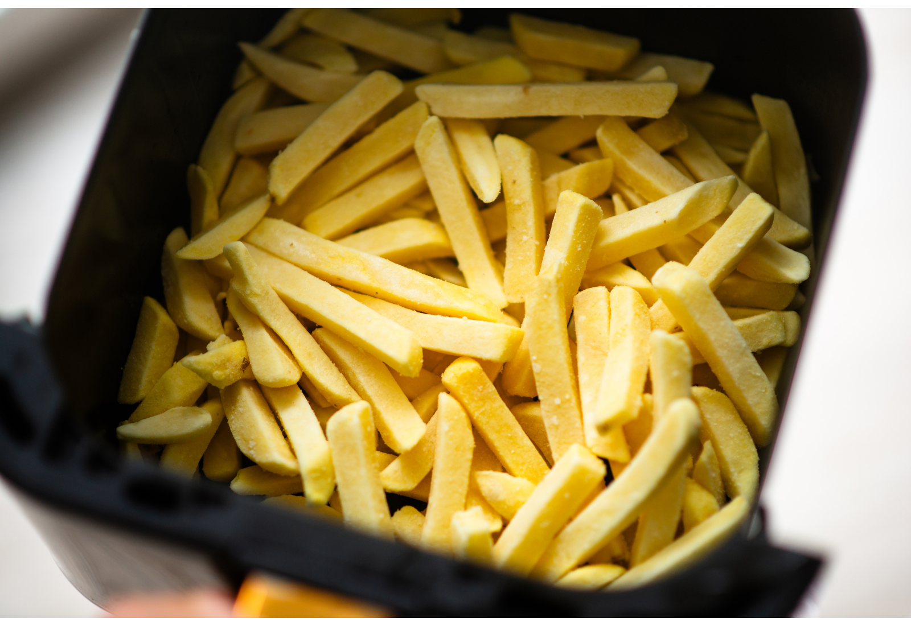

Six-litre basket
Leave space for air circulation.

Credentials applied with: Adobe Content Authenticity
Asset type: PNG image with embedded Content Credentials
Credential location: Embedded in the asset file
Last verification: Passed on 19/11/2026 using Content Credentials Verify
Verify Content Credentials
Credentials applied with: Adobe Content Authenticity
Asset type: PNG image with embedded Content Credentials
Credential location: Embedded in the asset file
Last verification: Passed on 19/11/2026 using Content Credentials Verify
Verify Content CredentialsFrozen fries
CrispChef A60 uses circulating hot air to cook frozen fries.
Load the basket loosely and follow the fries package guidance.
Shake midway and check the fries before serving.
Product highlights
CrispChef A60 combines capacity, power, programs and temperature control.
Leave space for air circulation.
Keep the vents clear.
Select the fries program.
Follow the package guidance.
Shake the fries midway.

Cooking
Cook the fries loosely, shake midway and check them before serving.
Do not overcrowd.
Redistribute the fries.
Serve when hot and cooked.
Cooking
Cook loosely, shake and check before serving.
Product details
Key information for CrispChef A60.

| Product | CrispChef |
|---|---|
| Model | A60 |
| Category | Air fryer |
| Basket | 6 L |
| Power | 1,700 W |
| Programs | Eight |
| Temperature | Adjustable |
| Setting | Use package guidance |
| Loading | Do not overcrowd |
| Midpoint | Shake the fries |
| Completion | Hot and evenly cooked |
| Cleaning | Cool before cleaning |
| Code | CC-A60-2026 |
Short explanation
Prepare, load, shake and check.
Position the fryer and check the package.
Place the fries loosely in the basket.
Shake the fries halfway through.
Serve when hot and evenly cooked.
Important information
Use and clean the fryer carefully.
Unplug and cool the fryer before cleaning.
Questions and Answers
Find short answers about CrispChef A60.
It is a six-litre, 1,700-watt air fryer.
It includes eight cooking programs.
Use the fries program or package guidance.
No, leave space for airflow.
Yes, shake them midway.
Unplug and cool it before cleaning.